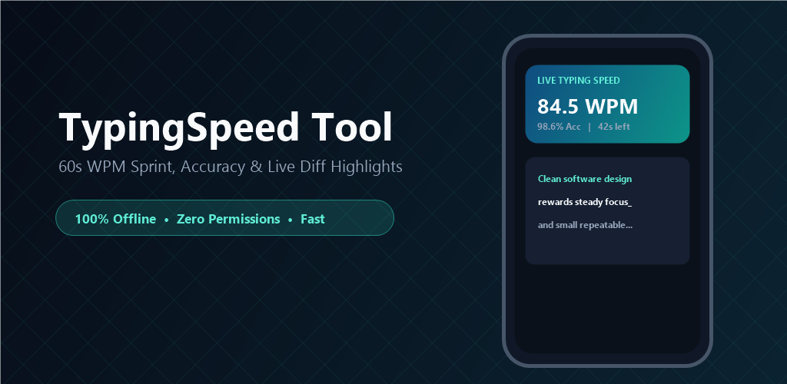
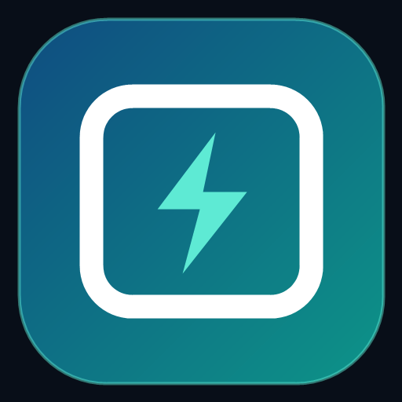

TypingSpeed Tool collects zero personal data, typed keystrokes, clipboard entries, telemetry metrics, or advertising identifiers. Keystrokes typed during speed sprints exist purely in volatile device memory and vanish immediately upon restart or exit.
TypingSpeed Tool requests zero dangerous or runtime Android permissions:
Every Net WPM calculation, character accuracy diff highlight, and countdown sprint runs 100% locally in RAM. Only UI settings (Dark/Light theme, haptic switch, decimal precision, and your Personal Best WPM score) are saved locally in Android SharedPreferences and erase completely on uninstall.
TypingSpeed Tool gathers zero personal information from users of any age and complies fully with COPPA and international privacy standards.